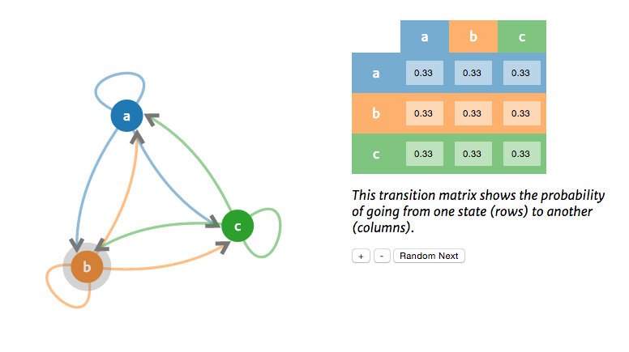
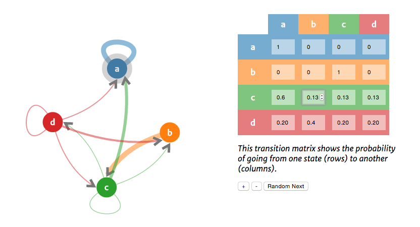

Docs - Observable Markov Models
by Will Paul Project | Credits
Intro
$$ \lambda = (Q, A) $$ $$ Q = q_{1}q_{2}...q_{N} $$ a set of N states $$ A = a_{11}a_{12}...a_{n1}..a_{nn} $$ an NxN transition probability matrix...
The above is the beginning of a formal definition of a simple Markov model. While formalism is an important part of mathematics, I think its best to approach formal definitions after developing an intuition about what the underlying process is all about. And what better way to do that than through an interactive visualization?
Screenshot of the default visualization state
Screenshot of the visualization after some user interactions
Design & technical motivations
The goal was to represent a mathematical concept with as little math as possible. At first I thought this would mean that the visualization would require certain knowledge dependencies and that I would need to either link out or explain: conditional probability, finite state automata, transducers, etc. In the end I decided to avoid going into any depth about these to keep the wall of text surrounding the visualization to an absolute minimum.
I decided to use a force layout originally to facilitate organization of the nodes, of course now that I see how it lays out the nodes it would have been possible to do this without any physics. However, I do think having them bob around and unfold as they roll adds to the fun of the interaction, so I still think it was a good choice.
Project requirements
-
Uses sound and/or other media appropriately
Sound was not required, because this isn't a game. All other media was generated progromatically. -
Uses canvas and bitmap images appropriately, with a consistent visual style; images are properly sized and optimized.
Visual style is fairly consistent, minimal and clean with color consistency throughout the visualization. No images to optimize. -
Uses an embedded or Web font to good effect
Used Merriweather for all long form text and Merriweather Sans for the actual visualization. Math-y stuff set in \(\LaTeX\) -
Experience is compelling, meaningful and enjoyable
Subjective, but I think it's fun. Others will have to be the judge of whether it's meaningful/useful since I already know the topic pretty well. -
User has appropriate control over sprites or the environment
Nodes are draggable, the number of nodes can be changed within reason (I limit the max), state transitions are triggered by the user, and the probabilities can be changed for each transition. -
Controls are responsive and intuitive
It works on mobile, especially in landscape mode, though still a better experience on the desktop. Nothing to out of the ordinary as far as controls go, used all standard input elements and drag/drop behavior. -
Includes different screens, as noted above
Has a project, documentation, and credits page. -
Includes necessary instructions, and the game isn’t needlessly hard
Includes a bit of descriptive text around the visualization. -
Provides good feedback
This whole visualization is about state transitions so making that apparent to the user was an important design consideration. -
Code is clean and runs without errors
No errors on the target browsers, could be shimmed to expand browser support slightly, but it's mostly canvas holding it back. -
Code is properly formatted and commented
Every function (or group of functions) has clarification/explanation text. -
Proper use of the JS module pattern, object literals, and at least 2 function constructors
Module pattern followed, "use strict" for every file, object literals everywhere, constructor functions for the HMM and Point objects with prototypes for their internal functions, `var` used to declare variables (always at the top of the function to avoid hoisting problems), no `console.log` in production. -
All required documentation checkpoints are met
Yep. -
Final project is properly documented
See this page and the credits page. -
Documentation includes citations for external materials used
See the credits page. -
Extra “above and beyond”
See "Why it's cool" below.
Why it's cool
Obviously, since it's not a game so not much of Blastem carried over into this implementation, other than some high level JS and Canvas concepts. Some of the things that I think make it cool that I figured out on my own.
- Implement D3's physics capabilities, while I have use D3 before, not with canvas. It handles a lot more of the grunt work when your dealing with SVG, so using it with canvas was (a mostly undocumented) learning experience.
- Implement the Markov model probability simulation and integrate it with user input
- Implement my own Point object to abstract away the complexities of the canvas drawing math.
- Quadratic and cubic curves and animations along them.
- Dynamic node and matrix table generation, just try the - and + buttons to see it in action.
- Draggable nodes for pointless, but fun interactivity
Issues & future work
I originally intended on visualizing the hidden Markov process, as it has more exciting applications (used in machine translation, speech recognition, autocomplete, basically anything where your trying to uncover something about a sequence where order matters). However, making a compelling visualization requires implementing the Forward, Forward-Backward, and Viterbi algorithms, which while doable was definitely out of scope for this project. I hope to extend this project in the future to include those as well.
The biggest issue I ran into was drawing the curves appropriately. At first I was trying to do it with cos and sin directly, but I quickly realized that the code was getting unreadable fast and that it was taking way too much time figuring all that out. So I decided to implement my Point/Vector object, which is really just a light abstraction over what I was already doing, but makes life so much easier in terms of wrapping your head around it immediately and of course five minutes later when you've forgotten everything you just did
The biggest outstanding bug is with the matrix table and the rows summing to 1. It is fairly robust, but since it still deals with JS floats rounding errors do happen (0.1 is repeating in binary). To fix this I need to deal with ints and convert back and forth between them and floats, but since it doesn't effect the actual probabilities in the simulation and the errors are always very small, I decided to focus on the other aspects of the project instead.